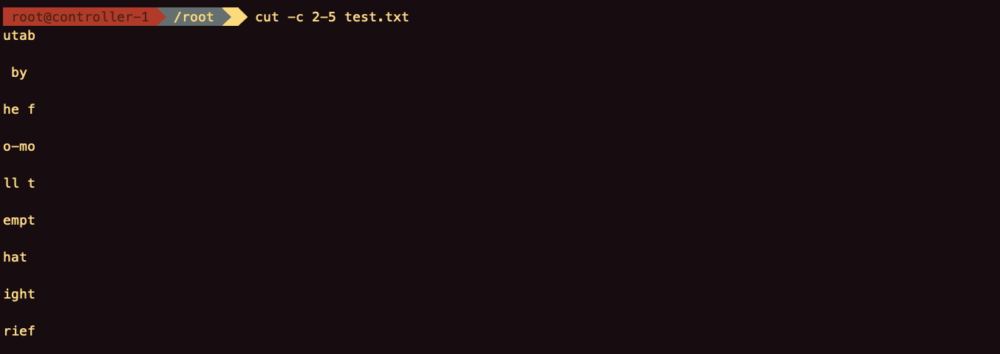
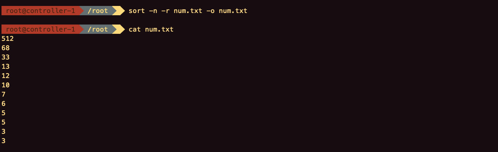

目录
文本工具
文本截取工具
- 文本内容： less、more和cat、tac、rev
- 文本截取： head和tail
- 按列截取： cut和paste
- 关键字截取： grep
cat
cat [OPTIONS] [FILES]
将文件连接到标准输出，查看文本。如果没有文件，或者当文件为-时，读取标准输入。
| OPTIONS | 含义 |
|---|---|
| -A, –show-all | 相当于-vET |
| -b, –number-nonblank | 非空行编号 |
| -e | 相当于-vE |
| -E, –show-ends | 显示行结束符$ |
| -n, –number | 显示行号 |
| -s, –squeeze-blank | 连续空行成一行 |
| -t | 相当于-vT |
| -T, –show-tabs | 显示制表符为^I |
| -v, –show-nonprinting | 使用^和M-引用，除了LFD和TAB |
test.txt
1 | Mutability |
{kind=link}
{kind=link}
{kind=link}
more
more [OPTIONS] [FILES]
分页查看文本。
| OPTIONS | 含义 |
|---|---|
| -d | 显示翻页提示 |
| -[number] | 每个屏幕的行数 |
| +[number] | 从行号[number]开始显示 |
| +/[string] | 查找从[string]开始显示 |
| b | 上一页 |
| 空格 | 下一页 |
| 回车 | 下一行 |
less
less is more
less [OPTIONS] [FILES]
| h | 帮助 |
| q | 退出 |
| e | 下一行 |
| y | 上一行 |
| b | 上一页 |
| z f | 下一页 |
| F | 一直打印，相当于tail -f |
| /pattern | 向后查找 |
| ?pattern | 向前查找 |
| &pattern | 只显示符合的行 |
| g | 首行 |
| G | 最后一行 |
| p% | 到文件开头，或者是文件的百分之p |
head
head [OPTIONS] [FILES]
打印每个文件的前十行。超过一个文件时，会打印文件名。
| OPTIONS | 含义 |
|---|---|
| -c, –bytes=[-]NUM | 打印每个文件的前几个字节。 NUM为负时，打印每个文件的除最后NUM字节的全部内容 |
| -n, –lines=[-]NUM | 打印每个文件的前几行（默认是10）。 NUM为负时，打印每个文件的除最后NUM行的全部内容 |
| -q, –quiet, –silent | 不打印文件名 |
| -v, –verbose | 总是打印文件名 |
tail
tail [OPTIONS] [FILES]
打印每个文件的最后十行。超过一个文件时，会打印文件名。
| OPTIONS | 含义 |
|---|---|
| -c, –bytes=[+]NUM | 打印每个文件的最后几个字节。 -c +NUM，打印每个文件的除开头NUM字节的全部内容 |
| -f, –follow[={name | descriptor}] |
| -F | 相当于–follow=name –retry |
| -n, –lines=[+]NUM | 打印每个文件的最后几行（默认是10）。 -n +NUM，打印每个文件的除开头前NUM行的全部内容 |
| -q, –quiet, –silent | 不打印文件名 |
| –retry | 如果文件不可访问，会继续尝试打开它 |
| -v, –verbose | 总是打印文件名 |
cut
cut [OPTIONS] [FILES]
打印每个文件的每一行被选定的部分。
| OPTIONS | 含义 |
|---|---|
| -b, –bytes=LIST | 截取LIST字节 |
| -c, –character=LIST | 截取LIST字符 |
| -d, –delimiter=DELIM | 指定分隔符string，默认tab |
| -f, –fields=LIST | 分隔后的几列 |
| –complement | 去除选定的字节、字符或字段集 |
| -s, –only-delimited | 不打印不包含限定的行 |
| –output-delimiter=STRING | 输出分隔符string |
{kind=link}
cut -c 2-5 test.txt
{kind=link}
{kind=link}
{kind=link}
{kind=link}
paste
paste [OPTIONS] [FILES]
合并文件同行号的到一行。
| OPTIONS | 含义 |
|---|---|
| -d, –delimiters=LIST | 指定分隔符，默认tab |
| -s, –serial | paste one file at a time instead of in parallel |
{kind=link}
{kind=link}
文本分析工具
wc
wc [OPTIONS] [FILES]
打印文件的行数、字数、字节数和文件名到一行。
| OPTIONS | 含义 |
|---|---|
| -c, –bytes | 打印字节数 |
| -m, –chars | 打印字符数 |
| -l, –lines | 打印行数 |
| -L, –max-line-length | 打印最长行的长度 |
| -w, –words | 打印单词数 |
{kind=link}
1 | [root@controller-1 /root]$wc /etc/passwd |
sort
sort [OPTIONS] [FILES]
文本排序。
| ORDERING OPTIONS | 含义 |
|---|---|
| -b, –ignore-leading-blanks | 忽略开头的空格 |
| -d, –dictionary-order | 只考虑空格、字符和数字 |
| -f, –ignore-case | 忽略大小写 |
| -g, –general-numeric-sort | 按数字排序 |
| -i, –ignore-nonprinting | 只考虑可被打印的字符 |
| -M, –month-sort | 月份排序（(unknown) < ‘JAN’ < … < ‘DEC’） |
| -h, –human-numeric-sort | 按可阅读的数字排序（例如：2K 1G） |
| -n, –numeric-sort | 按数字排序 |
| -R, –random-sort | 随机 |
| -r, –reverse | 反向 |
| OTHER OPTIONS | 含义 |
|---|---|
| -k, –key=KEYDEF | 指定KEY排序，KEYDEF定义位置和类型信息 |
| -o, –output=FILE | 输出文件 |
| -t, –field-separator=SEP | 分隔符，排序时按指定字符分隔 |
| -u, –unique | 去除重复行 |
{kind=link}
{kind=link}
{kind=link}
{kind=link}
sort -n -r num.txt -o num.txt
{kind=link}
{kind=link}
{kind=link}
{kind=link}
uniq
uniq [OPTIONS] [FILES]
去除重复行。
| OPTIONS | 含义 |
|---|---|
| -c, –count | 在每一行前面打印重复行的出现次数 |
| -d, –repeated | 只打印重复行 |
| -D | 打印重复行（所有的） |
| -i, –ignore-case | 忽略大小写 |
| -s, –skip-chars=N | 忽略前N个字符 |
| -u, –unique | 只打印不重复行 |
{kind=link}
{kind=link}
{kind=link}
{kind=link}
diff
diff [OPTIONS] [FILES]
按行比较文件。
| OPTIONS | 含义 |
|---|---|
| –normal | 打印普通结果，默认 |
| -q, –brief | 当文件不同时，打印提示 |
| -s, –report-identical-file | 当文件相同时，打印提示 |
| -c, -C NUM, –context[=NUM] | 打印NUM（默认3）行上下文，以分开的方式 |
| -u, -U NUM, –unified[=NUM] | 打印NUM（默认3）行上下文，以合并的方式 |
| -e, –ed | 输出ed脚本 |
| -y, –side-by-side | 打印两列 |
| -W, –width=NUM | 每列至少NUM（默认130）宽度，配合-y使用 |
| –left-column | 只打印左边列，配合-y使用 |
| –suppress-common-lines | 只打印不同行，配合-y使用 |
| -p, –show-c-function | 若比较C语言的程序文件时，显示差异所在的函数名 |
| –label LABEL | 标签名替换文件名和时间戳，配合-c或-u使用 |
| -t, –expand-tabs | 在输出时，将tab字符展开 |
| -T, –initial-tab | 在每行前面加上tab字符 |
| –tabsize=NUM | tab字符大小（默认8） |
| -l, –paginate | 分页 |
| -r, –recursive | 递归比较找到的所有子目录 |
| –no-dereference | 不遵循符号链接 |
| -N, –new-file | 将没有的文件视为空 |
| –ignore-file-name-case | 比较文件名时忽略大小写 |
| –no-ignore-file-name-case | 比较文件名时不忽略大小写 |
| -x, –exclude=PAT | 不比较指定文件PAT |
| -X, –exclude-from=FILE | 不比较指定文件中的文件 |
| -S, –starting-file=FILE | 从指定目录开始比较 |
| –from-file=FILE1 | 用FILE1和其他文件比较，FILE1可以是目录 |
| –to-file=FILE2 | 用其他文件和FILE2比较, FILE2可以是目录 |
| -i, –ignore-case | 比较文件内容时，忽略大小写 |
| -E, –ignore-tab-expansion | 比较文件内容时，忽略tab扩展 |
| -Z, –ignore-trailing-space | 忽略行尾的空格 |
| -b, –ignore-space-change | 忽略空格数量 |
| -w, –ignore-all-space | 忽略所有空格 |
| -B, –ignore-blank-lines | 忽略空行 |
| -I, –ignore-matching-lines=RE | 忽略符合RE的行 |
| -a, –text | 将所有文件视为文本文件 |
| -d, –minimal | 以较小的单位来做比较 |
| –color[=WHEN] | 颜色，WHEN可以是never、always或者auto（默认auto） |
{kind=link}
{kind=link}
 diff -c test.txt test-1.txt
diff -c test.txt test-1.txt{kind=link}
{kind=link}
{kind=link}
grep
grep [OPTIONS] PATTERN [FILES]
PATTERN
| OPTIONS | 含义 |
|---|---|
| -E, –extended-regexp | PATTERN是扩展正则表达式 |
正则表达式
基本正则表达式
字符匹配
| 字符 | 含义 |
|---|---|
| . | 匹配单个字符 |
| [] | 匹配中括号里任意字符 |
| [^] | 排除中括号里任意字符 |
| [:alnum:] | 匹配字母和数字 |
| [:digit:] | 匹配数字 |
| [:alpha:] | 匹配字母 |
| [:lower:] | 匹配小写字母 |
| [:upper:] | 匹配大写字母 |
| [:blank:] | 匹配空白字符（空格和tab） |
| [:space:] | 匹配水平和垂直空白符 |
| [:cntrl:] | 匹配不可打印控制字符 |
| [:graph:] | 匹配可打印的非空字符 |
| [:print:] | 匹配可打印的字符 |
| [:punct:] | 匹配标点符号 |
匹配次数
| 字符 | 含义 |
|---|---|
| * | 匹配前面的字符>0次 |
| .* | 匹配任意长度的任意字符 |
| \? | 匹配前面的字符0或1次 |
| \+ | 匹配前面的字符>1次 |
| \{n\} | 匹配前面字符n次 |
| \{m, n\} | 匹配前面字符至少m次，最多n次 |
| {, n\} | 匹配前面字符最多n次 |
| {n, \} | 匹配前面字符最少n次 |
位置匹配
| 字符 | 含义 |
|---|---|
| ^ | 行首 |
| $ | 行尾 |
| ^$ | 空行 |
| \< 或 \b | 词首 |
| \> 或 \b | 词尾 |
| \<WORD\> | 整个单词 |
分组
| 字符 | 含义 |
|---|---|
| \(WORD\) | 字符串作为整体 |
| \| | 或者 |
| \1 \2 | 分组引用 |